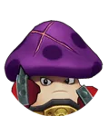

Deserto Estéril
Chefe: Criaturas de Cogumelo
Monstros defendem ferozmente esse vasto território de... absolutamente nada.
Níveis
1
Poder 700
Areia branca, Presa de bronze, Cristal da lua
2
Poder 1.000
Areia branca, Presa de bronze, Cristal da lua
3
Poder 1.500
Areia branca, Presa de bronze, Cristal da lua
4
Poder 6.500
Areia branca, Presa de bronze, Cristal da lua
5
Poder 1.500 · Chefe
Areia branca, Presa de bronze, Cristal da lua
6
Poder 2.000 · Chefe
Areia branca, Presa de bronze, Cristal da lua
7
Poder 2.750 · Chefe
Areia branca, Presa de bronze, Cristal da lua
8
Poder 8.000 · Chefe
Areia branca, Presa de bronze, Cristal da lua